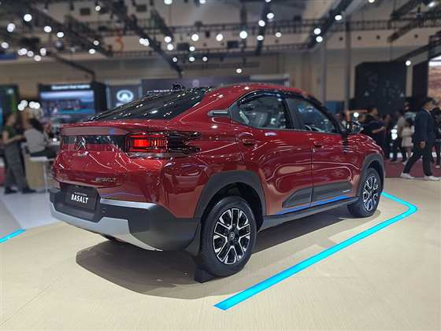

Patagonia 2027
8 amigos · 14 noches
Una tarde en Buenos Aires y, desde San Martín de los Andes, a Bariloche por la Ruta de los 7 Lagos, con Año Nuevo frente al Falkner y una noche al borde del glaciar del Tronador.
27/12 → 10/015 noches de carpa/refugio9 en casa≈800 km de rutatecho: 2.000 m
Las fotos de cada día son de Wikimedia Commons (autor y licencia en cada una); si alguna no carga, aparece el paisaje dibujado. Los botones “Ver fotos” abren más fotos en una pestaña nueva. Itinerario sujeto a cambios (camino a Pampa Linda, clima, reservas).



Hertz, en el aeropuerto Chapelco
Dos Citroën Basalt
- Retiro
- lunes 28/12, 10:00
- Devolución
- domingo 10/01, 10:00
- Auto
- Basalt VTI Live PK o similar, manual, 5 plazas, baúl para 3 valijas
USD 1.810,88los dos autos, 13 días, con seguro completo. Unos USD 226 por persona, sin contar la nafta.
Conductor de 22 años
USD 905,44- Al reservar
- 180,76
- En el mostrador
- 724,68
- Depósito en la tarjeta
- 1.679,47
Conductor de 23 años
USD 905,44- Al reservar
- 180,76
- En el mostrador
- 724,68
- Depósito en la tarjeta
- 1.679,47
Precio consultado el 30/10/2026 en EconomyBookings, como residentes de Uruguay. Si un carrito venció, buscá de nuevo para 22 años o 23 años y elegí el Basalt VTI Live PK de Hertz a USD 779,10.
Qué incluye
- Kilometraje ilimitado, impuestos y tasa del aeropuerto
- Seguro básico contra choque y robo, y responsabilidad civil
- Asistencia en ruta las 24 horas
- Cobertura Total, USD 126,34 por auto: parabrisas, cubiertas, la parte de abajo y la devolución de la franquicia
Para retirarlos
- Licencia, Permiso Internacional de Conducir y documento
- Tarjeta de crédito física a nombre del que maneja, con USD 1.680 libres para el depósito
- Devolverlos con el tanque lleno
- Se cancela gratis hasta 48 horas antes
La Visa Infinite
El seguro de la Santander Select cubre el auto si está a nombre del titular y se paga entero con esa tarjeta, lo de la reserva y lo del mostrador. No cubre nada que pase en ripio; para eso está la Cobertura Total.
Las casas elegidas
La del grupo · precios consultados el 30/10/2026 · total para los 8
| Lugar | Casa | Noches | Total | Por persona |
|---|---|---|---|---|
| San Martín | Casa en Las Pendientes ↗ AirbnbConfirmada ✓ | 28 al 30/12 | USD 857 | USD 107 |
| La Angostura | Cuncumen ↗ Booking | 3 al 6/1 | USD 948 | USD 119 |
| Bariloche | Departamento sobre el lago ↗ Airbnb | 7 al 10/1 | USD 742 | USD 93 |
| Total | 8 noches | USD 2.547 | USD 318 | |
USD 318
por persona, las 8 noches en casa
Antes de reservar
- Cuncumen es de Booking: entrá con tu cuenta para ver el descuento de Genius.
- Las Pendientes se cancela gratis hasta el 14/12 y el departamento hasta el 6/1. En Cuncumen, elegí la tarifa con cancelación gratis si aparece.
- El departamento tiene 2 dormitorios: 4 duermen en una pieza y 2 en el diván del living.
- Los precios cambian todos los días en temporada alta: conviene reservar pronto.
Casas
A favor
En contra
Combinaciones para las 8 noches
Precios totales para los 8, consultados el 30/10/2026 en Airbnb y Booking, en USD. En Booking, con Genius nivel 2 pueden salir entre 10% y 15% menos. Puntajes de 1 a 5: casa, ubicación (centro y lago), vistas, cercanía a las actividades del itinerario, extras (pileta, juegos, quincho) y calidad-precio. Los precios cambian todos los días en temporada alta.